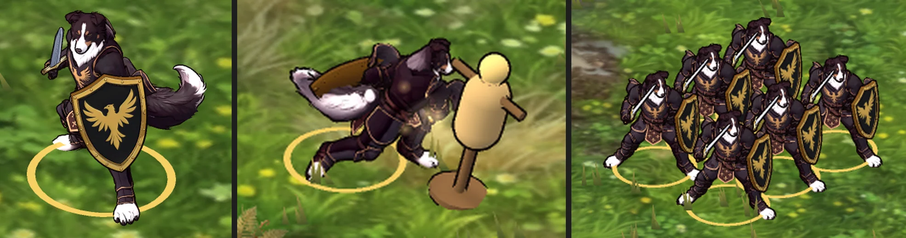
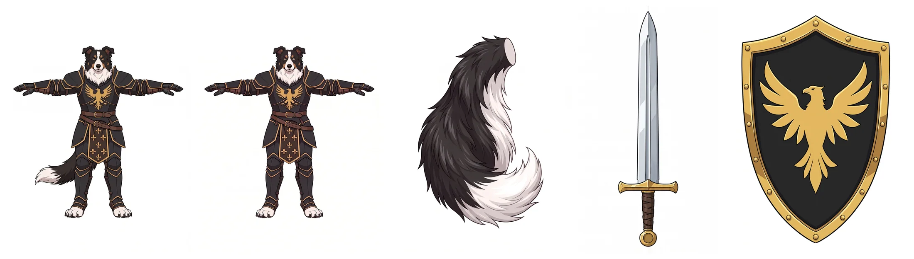
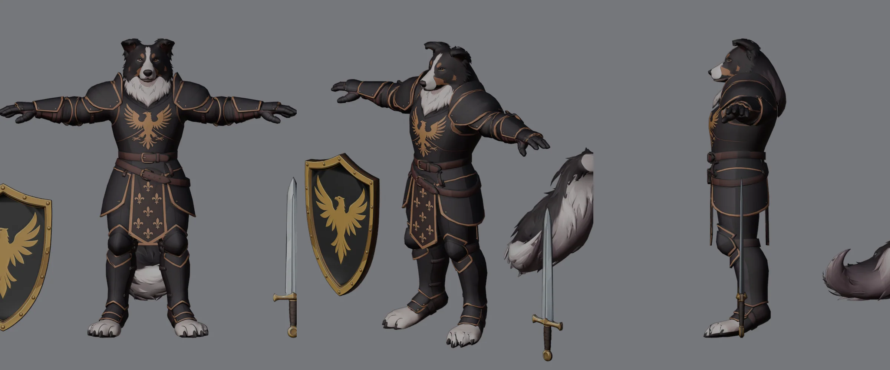
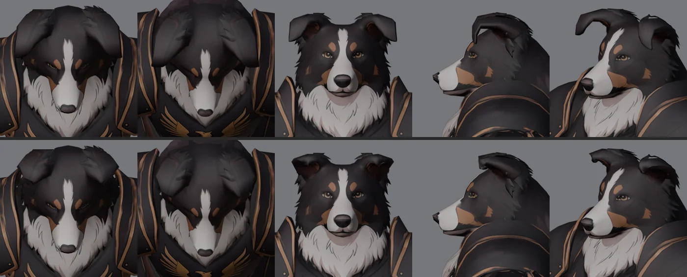
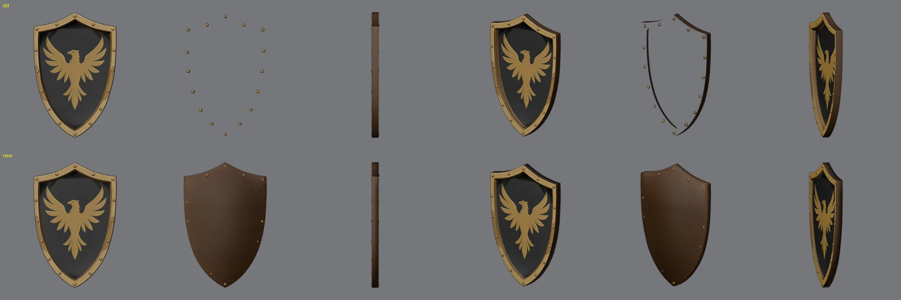
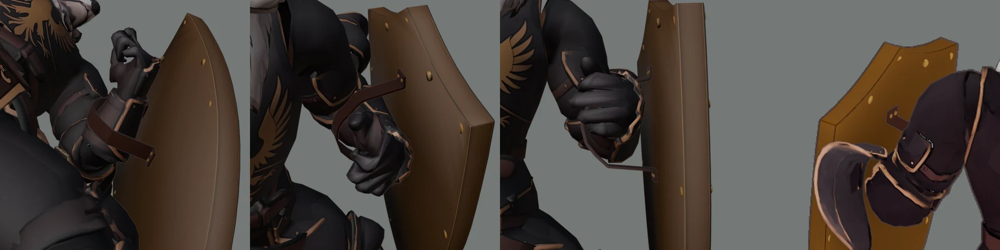
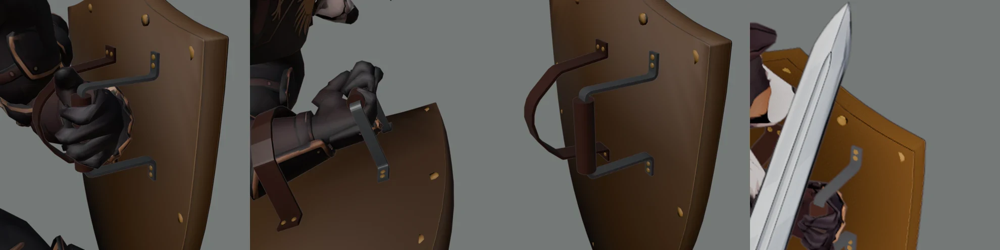

MERIDIUS / AMBERFELD ROYAL GUARDS / 3D RIG / 27 OCT 2026
Collie Royal Guard 3D rig
The king's guard from the painting, a border collie in black plate with the eagle shield. The concept was drawn in Nano Banana Pro on Higgsfield, the model built in Tripo and rigged in Blender on the footman's skeleton. He plays all nineteen of the footman's clips. His plumed tail is his own: it sways with his stride, streams out behind him at the run and lies on the ground beside him when he falls. He fights in the 3D sandbox as the Royal Guards, a squad of six in the footmen's drill.
Pose viewer
Pick a clip and a facing, pause, then step frame by frame to the pose you want to comment on. Screenshot with the readout in view, so the frame is named. Keys: Space play / pause, ← → one frame, Shift + ← → five frames, Home and End first and last frame. Same camera and scale as the footman's viewer.
Drawn from the painting in the footman's T-pose. Nano Banana Pro would not make him bulkier in an edit, so the body and the sword were widened locally. Tail, sword and shield were drawn on their own.
Four Smart Mesh models in quads, each textured at 4K from its own image: body 5,159 faces, tail 1,043, sword 661, shield 894. 480 credits, approved by the user.
The horn-like ear blades are folded back over the crown and trimmed to short folded ears. The shield's field is brought forward towards the rim and its open back closed.
The footman's Mixamo skeleton fitted to his longer arms and dog's head. His gauntlets are curled into fists round the grip. Six tail bones, and bones of their own for the tabard's panels and the tassets.
The footman's nineteen clips carried over bone for bone, the hips' travel scaled to his height. On them his own tail and hanging armour: sway, drag, the run's lift, and the tail laid on the ground in death.
Exported with the footman's settings and blows, as the Royal Guards: six collies in two ranks of three. Checked in the game's window: alone, striking a dummy, at home and in the battle.
In the sandbox

From concept to Tripo

The model

Ears, shield, strap and grip




Notes
- Tail. Built as the succubus's: its own Tripo model, mounted under his belt on six bones. Each bone swings about its own axis a little later than the one before, so the swing runs down to the tip. At idle and in the block it sways slowly, a whole number of times per loop. Walking, it swings once per stride against his hips' sway; at the run it lifts and streams out behind him, and in the charges it sinks again after the blow. In the blows and hits it trails his hips' turn by a few frames. In the death it droops as he falls; once he lies on his front it is laid on the ground to his right, away from his shield. A last pass turns up any tail bone that would go under the ground.
- Hanging armour. The tabard's front panel swings forward over whichever thigh is furthest forward, the back panel back with whichever is furthest back, never sideways. The side tassets follow their thighs.
- Clips. Taken from the footman's rig bone for bone: his bones turn exactly as the footman's turn away from the T-pose, so the guard, the blows and the steps are the footman's. The hips' travel is scaled to the collie's hip height.
- To judge. In the thrusts the shield and his left fist pass into his belly, and as he falls the fist passes into his left tasset: the footman's clips swing the shield arm that far in, and the grip goes with the fist. The sword's clearance in the clips is not checked frame by frame. Only the painting's black tricolour coat exists; the sprite's other coats could be texture variants later. In the game he has the footman's settings and blows; nothing is his own yet.
- Files. In
projects/meridius/source/godot/art/collie_guard_3d/:collie_base.blend,collie_rig.blendand the tools that build them, documented in itsREADME.md.collie_anim.blendand the sandbox'scollie_guard.glbstay local, because the footman's clips are made from Mixamo clips. The GLB's sidecarcollie_guard.jsonand its textures are inprototypes/sandbox3d/art3d/. The concept images and prompts are inreferences/characters/collie_guard/, the Tripo exports inreferences/characters/tripo/collie_guard/.